Okolica i porady
Co zobaczyć, spróbować i przeżyć
Nasze osobiste porady na Batumi i okolicę. Przy każdym miejscu znajdziecie przycisk nawigacji w Mapach Google.
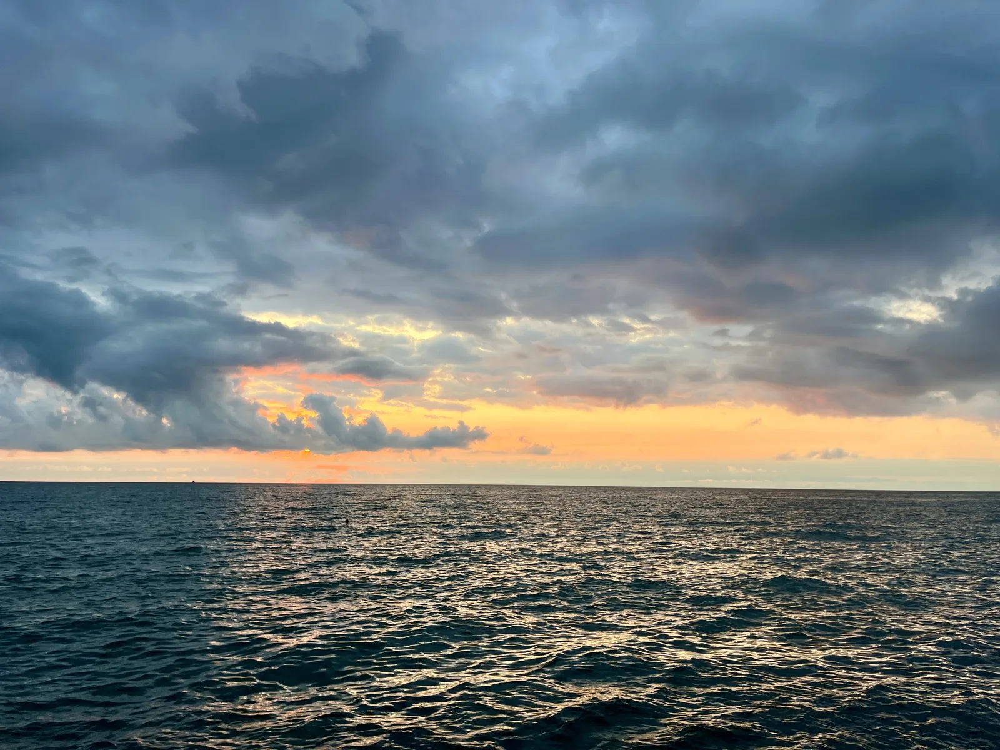
Tuż za rogiem
Co jest kilka kroków od domu
Łącznie 8Kategoria 1 · 11
Zabytki i miasto
Łącznie 8
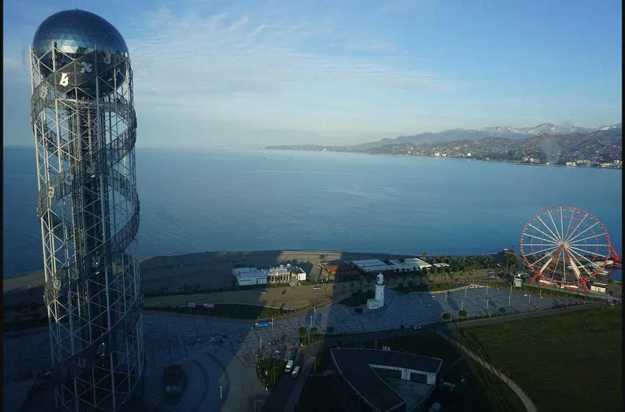
Wieża alfabetu gruzińskiego
Wieża
130-metrowa wieża z tarasem widokowym i obracającą się restauracją — fasadę tworzy wszystkie 33 litery gruzińskiego alfabetu.
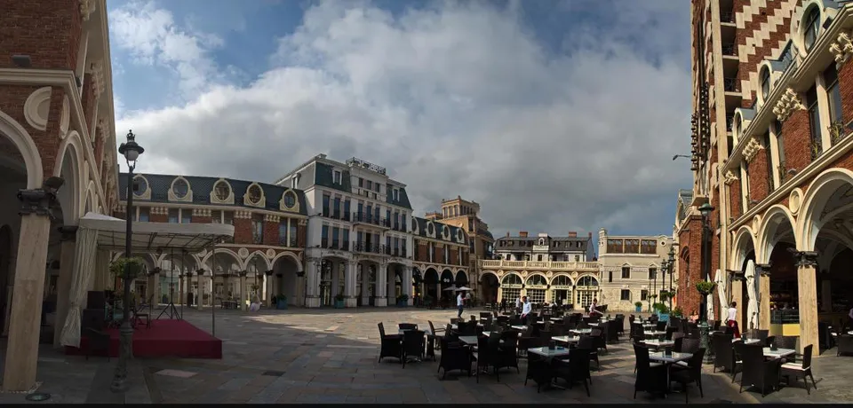
Batumi Piazza Square
Plac
Plac w stylu włoskim z 2010 roku z mozaiką o powierzchni 106 m² — jedną z największych figuratywnych mozaik w Europie — i wieżą zegarową. Wieczorem ożywa kawiarniami i muzyką na żywo.
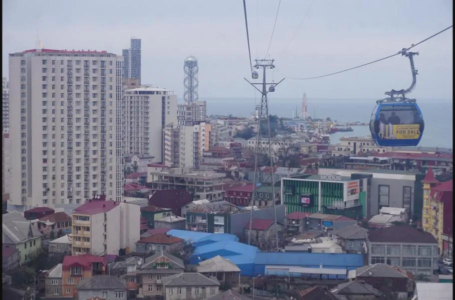
Argo Cable Car
Kolejka linowa
Jedna z najdłuższych kolejek linowych w regionie zawiezie was w 15 minut na górę Anuria (256 m n.p.m.) z widokiem na całe miasto i morze.
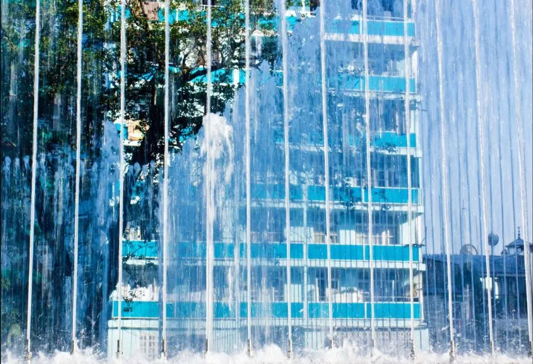
Tańczące fontanny
Fontanny
Fontanny na bulwarze wieczorem ożywają muzyką, kolorowymi światłami i pokazem laserowym — jedne z największych w Europie.
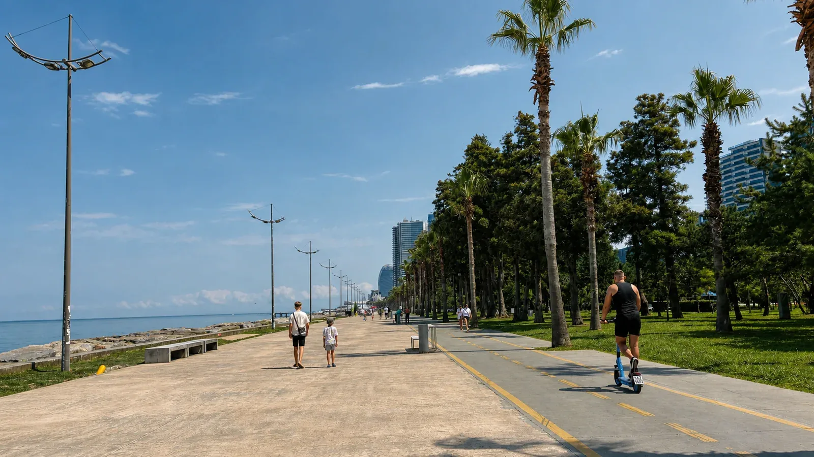
Bulwar w Batumi
Promenada
Siedmiokilometrowa nadmorska promenada wzdłuż kamienistej plaży — palmy, parki, ścieżka rowerowa i wieczorne fontanny. Kręgosłup miasta, który przejdziecie pieszo, rowerem lub hulajnogą.
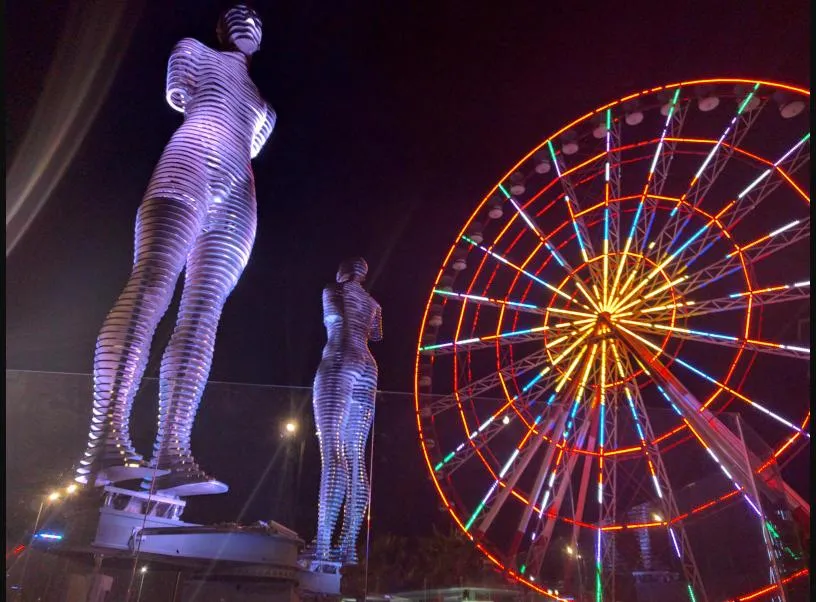
Ali i Nino
Rzeźba
Ruchoma rzeźba miłości autorstwa Tamary Kvesitadze — dwie 8-metrowe postacie co wieczór powoli się zbliżają, przenikają przez siebie i znów oddalają. Przypomina o miłości muzułmańskiego chłopca i chrześcijańskiej dziewczyny z powieści Ali i Nino.
Kategoria 2 · 11
Wycieczki i przyroda
Łącznie 10
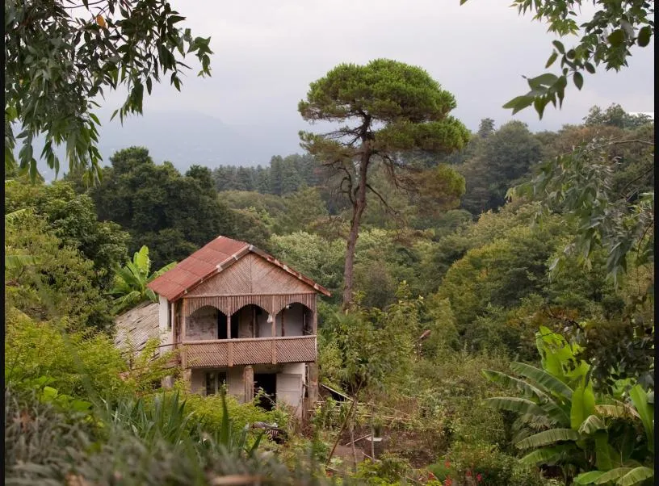
Batumi Botanical Garden
Ogród botaniczny
Jeden z największych ogrodów botanicznych świata (108 ha) na klifach Zielonego Przylądka, założony w 1912. Ponad 2000 gatunków drzew z całego świata, podzielonych na sekcje „kontynentalne”.
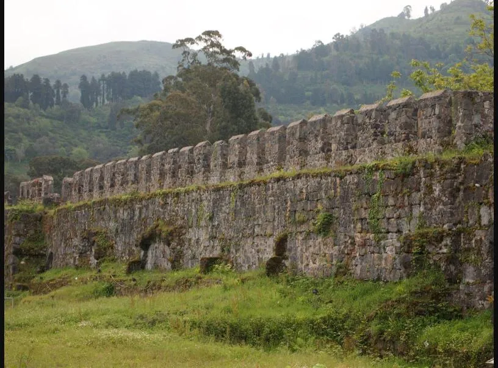
Twierdza Gonio (Apsaros)
Twierdza
Rzymska twierdza Apsaros z I wieku, jedna z najstarszych w Gruzji, z zachowanymi murami i muzeum archeologicznym.
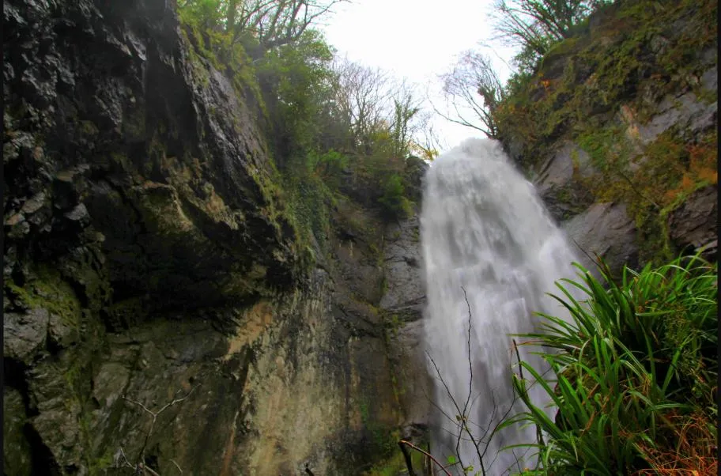
Wodospad Makhuntseti
Wodospad
30-metrowy wodospad i kamienny most królowej Tamary z XI–XIII w., oddalone od siebie o 500 m, ok. 30 km od Batumi.
Gomis Mta Viewpoint Punkt widokowy
Punkt widokowy na grzbiecie na wysokości ok. 2100 m, skąd przy dobrej pogodzie widać pod sobą „morze chmur”. Najlepiej o świcie lub zachodzie słońca.
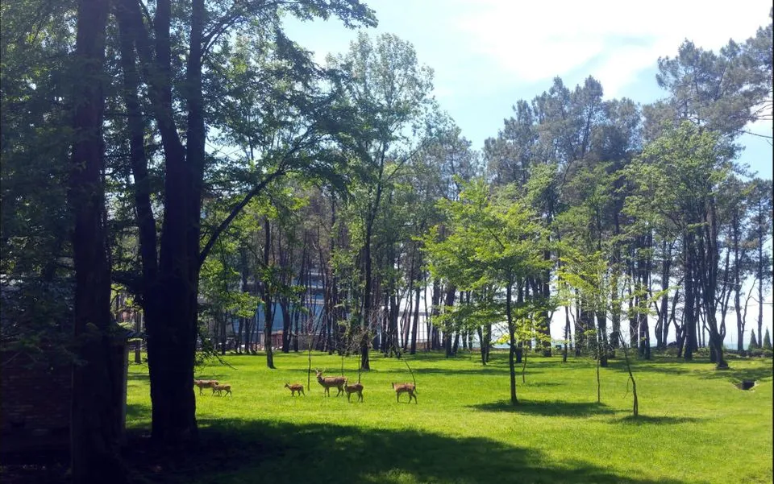
Park Dendrologiczny Shekvetili
Park
60-hektarowy park z przesadzonymi rzadkimi drzewami z zachodniej Gruzji i egzotycznymi gatunkami z pięciu kontynentów. Żyją tu też lemury, flamingi i dziesiątki gatunków papug i ptaków.
Kategoria 3 · 11
Plaże i wędkowanie
Łącznie 11
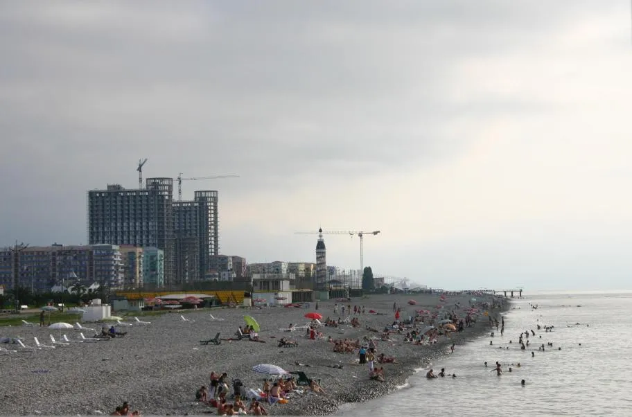
Plaża miejska
Plaża
Kamienista plaża ciągnąca się wzdłuż całego bulwaru — w kilka minut jesteście w centrum i nad wodą.
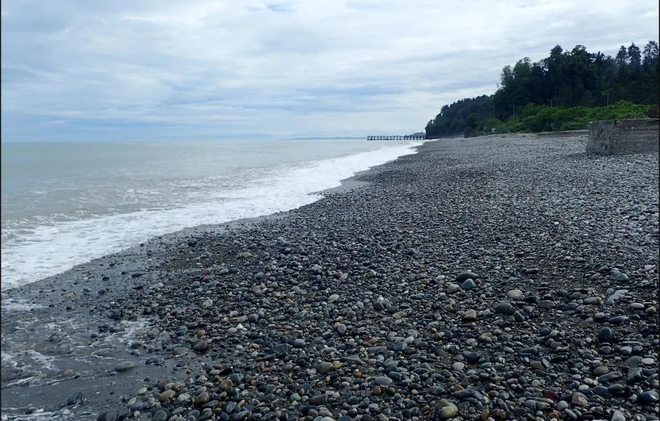
Zielony Przylądek (Mtsvane Kontskhi)
Plaża
Spokojniejsza plaża pod klifami ogrodu botanicznego, ok. 9 km od centrum — 500 m kamienistego wybrzeża otoczonego zielenią.
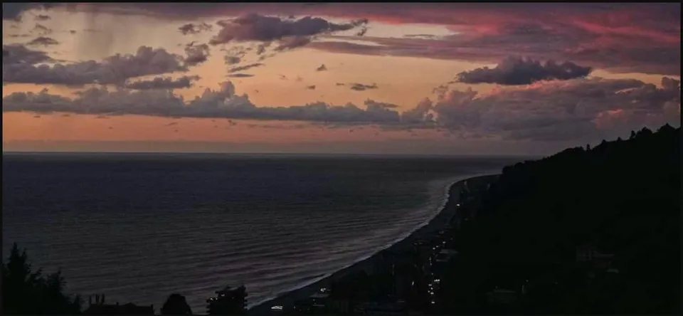
Kvariati i Sarpi
Plaża
Najczystsza woda w okolicy, zaledwie 3 km od granicy z Turcją. Szeroka kamienista plaża (do 50 m) między górami, z jedynym w Gruzji centrum nurkowym.
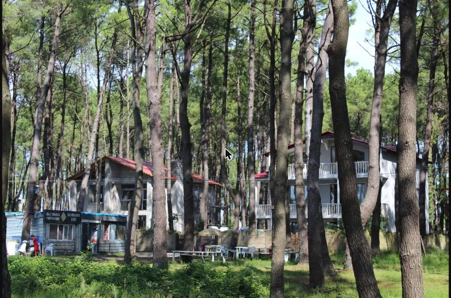
Plaża z magnetycznym piaskiem
Plaża
Unikalny ciemny piasek z wysoką zawartością magnetytu koło Shekvetili i Kaprovani — miejscowi od lat przypisują mu lecznicze działanie na stawy i krążenie (naukowo niepotwierdzone, ale warto spróbować). Morze jest tu płytkie i ciepłe, przyjemne też dla dzieci.
Kategoria 4 · 11
Kuchnia gruzińska
Łącznie 23Kategoria 5 · 11
Kuchnie świata i bary
Łącznie 15Kategoria 6 · 11
Kawiarnie, piekarnie i słodycze
Łącznie 7Kategoria 8 · 11
Spożywcze i targi
Łącznie 15Kategoria 9 · 11
Zakupy i pamiątki
Łącznie 16Kategoria 10 · 11
Dla dzieci
Łącznie 7Batumi City Zoo Zoo
Miejskie zoo założone w 1975, na powierzchni 6 ha, z lokalnymi i egzotycznymi gatunkami zwierząt.
STAR Circus Georgia Cyrk
Arena cyrkowa w Batumi z letnim programem — akrobacje, żonglerka i show artystyczne dla całej rodziny.
Kategoria 11 · 11